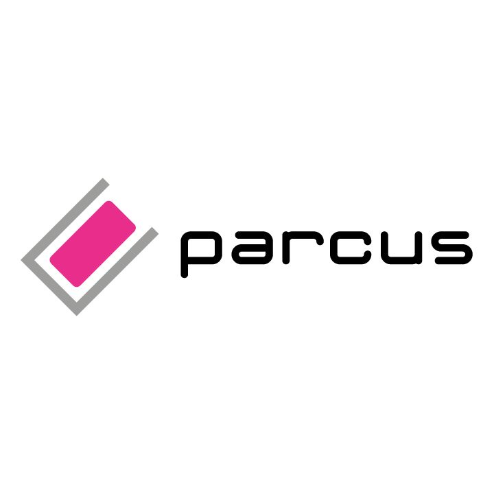
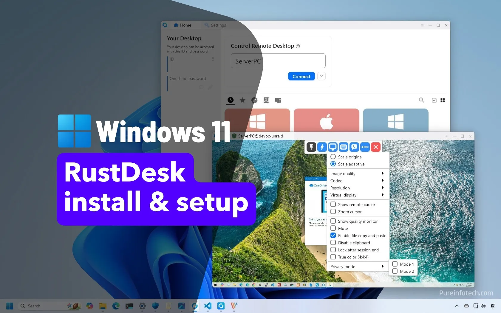
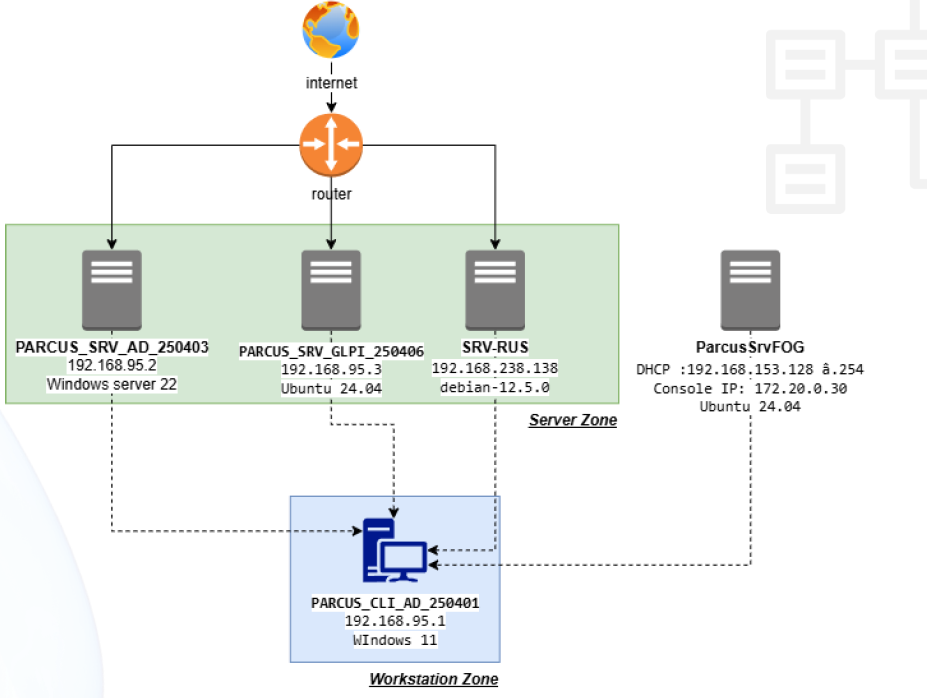

Mise en place d'une infrastructure réseau sécurisée et redondante pour l'entreprise Parcus.

Initialement commencé en autonomie, ce projet a évolué vers un travail d'équipe pour concevoir l'infrastructure de bureau à distance de Parcus. Ma mission s'est concentrée sur le déploiement de la solution de contrôle à distance.

J'ai configuré l'outil RustDesk, en surmontant des difficultés techniques liées à l'interconnexion entre les clients et le domaine. Cette phase a permis de stabiliser les accès malgré une expérience initiale limitée sur cette technologie.

Le système est fonctionnel et les accès distants sont opérationnels. Toutefois, bien que les services soient liés virtuellement, l'intégration technique globale entre les différents modules du groupe reste modulaire plutôt qu'unifiée.